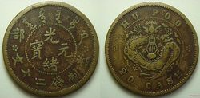

光绪元宝
光绪元宝是清朝光绪年间流通的货币之一。由湖北两广总督张之洞率先引进英国铸币机器铸造银元和铜元，之后各省纷纷仿效。共有十九个省局铸造，除中央户部，地方省所铸铜元，皆在其正面上缘镌写省名。
光绪元宝是大清光绪年流通大面值货币之首，是我国首批引进海外技术的印发流通货币，对于现今也蕴藏了一定历史意义。安徽铜元局铸造的铜元中，最为珍贵的极品，当属大名鼎鼎的“安徽方孔十文”（安徽省造光绪元宝方孔十文铜元）“安徽省造光绪元宝五文铜元“安徽方孔十文”铸量更小，是“中国铜元十珍”之一。
中文名
光绪元宝
外文名
SILVERDOLLAR
发行时间
清光绪十三年（1887）
结束使用时间
民国元年（1912）
市场价格
30万
发行人
张之洞
重 量
26.7g
外 径
39mm
厚 度
2.5mm
产生背景
清代银币、纸钞、铜币并行，至嘉庆年间发行新式银元，而光绪年间铸行金、银币更多。洋务运动也影响到铸币业，两广总督张之洞曾于光绪十三年（1887年）委托使英大臣在英国订购全套造币机器，并在广东钱局首铸机制银元和铜元。其后，各省纷纷仿效，购制国外机械铸造银、铜元。包括广东钱局在内，许多造币机均订购自著名的英国伦敦伯明翰造币有限公司。英国大工业的介入，使银币也沾染上西方色彩。钱币正面鲜然可见满汉文化的融合，而钱背却明确标示了西方文化的介入。
“光绪元宝”当时共十九个省局铸造。除中央户部，地方省所铸铜元，皆在其正面上缘镌写省名。计有：1户部；2北洋；3吉林；4奉天；5清江；6浙江；7江南；8广东；9山东；10福建；11湖南；12湖北；13四川；14江西；15河南；16安徽；17广西；18新疆；19黑龙江。
银元
银币光绪元宝1898年--1907发行，正常成色为89%-90%。正面铸有铭文，顶部铸楷体“XX省造”或“造币总厂”，底部铸货币价值如：“库平一钱四分四厘”，中心直读“光绪元宝”四字，币中心为满文“光绪元宝”。银币背面外圈顶部用小号英文标准字体铭“XX省造”或“造币总厂”字样，下面为英文货币价值，内圈铸有中心为蟠龙图，品相精致，其审美风格独特。钱币虽小，也可管窥社会文化一斑。
光绪元宝户部一两银币的特征
二、 户部一两可由“两”字笔法从“人”、或“入”分为两版。
三、 该币市场价值高，市场价值应当在百万以上。
四、 在清代为了流通兑换行用时的方便，官铸的很多面值是一两的银币多有铸成实重为库平七钱二分的壹圆型银币版式。如戊申吉字大清银币库平一两、户部光绪元宝库平一两、光绪三十年湖北省
造光绪元宝库平一两、中外通宝关平银一两等等，都有实际重量为一两型和重库平七钱二分的流通壹圆型两种版式。重库平七钱二分的壹圆型硬币实际重量为26.7g左右，外径大小为39mm，厚度2.5mm。该版铸造模具不同于实重平一两版，仅作为军饷流通过极少，存世量稀少，下图为光绪元宝实重七钱二两流通壹圆型真品。正面“光绪元宝”以及所有文字的笔划中均藏有圆点形暗记，丝毫不影响文字书法的大气沉稳。
五、 该币实际生产数量：本币在袁世凯批准后总共试制了六七千枚。
六、 该币是中国所有龙洋图案银元（包括国外发行的所有银币）中，工艺最精湛，雕工最完美，浮雕感最强烈的品种，镜面平整光滑，纹饰的相惯线（相惯线——现代机械制图学术语，即平面与平面、平面与曲面及曲面与曲面之间的交线。）显得非常清晰，特别是户部一两系列银币铸造精美，字口、纹路和边齿深峻，完全是国外铸造的样币风格。作为准备流通的货币（尽管没有流通），其暗记防伪更是前无古人后无来者，无可匹敌，钱币表面的包浆醇厚，即便是对银元没有研究的外行也是爱不释手，极具观赏性。
户部一两银币，楷书文字书法极为精湛、大气，间架结构平衡舒展，在龙洋里首屈一指。而赝品几乎是千篇一律的具有文字不流畅、图像模糊的特征，其文字走失风神，一般含银量低，也没有什么锈色包浆，防伪暗记更是无从谈起！赝品伪币纯属东施效颦。
事实上，迄今铸造的银、铜币的文字也没有哪一种可以与户部一两的文字相比。最重要的两点：一是该币几乎每一笔笔画中以及纹饰中均添加了迄今难以模仿的圆点暗记，令人叹为观止。二是背面盘龙龙眼内有两颗清晰的内视龙睛，直指龙珠，简直就是最优秀的盘龙浮雕作品。至今为止的诸多的臆造币、仿造币文字和铸造上无一可望其项背！ [1]
江南省造库平七钱二分
1897年（光绪二十三年）,开铸“江南省造”三种无纪年版别银元（俗称老江南，）标准库平七钱二分的重量应当在30克左右。1898年~1905年（光绪二十三年至三十一年），江南造币厂在八年时间里所生产的银币，增加了干支纪年（俗称新江南），早期重量也是按之前标准30克来制造，但是没有流通；后来重量改成26.3--27克，这是我国在银币铸造上镌干支纪年系列最早的省份。根据八年铸币统计，光绪三十一年铸币最少，但亦生产了
200多万枚银币，最多的年份要数光绪二十七年，这一年里，共铸制了5000多万枚银币，由此，可以看出这家造币厂的生产能力非同一般。1911年（宣统三年），江南造币厂共铸壹元银币70.5万枚，贰角银币5.5万枚，壹角银币1万枚。现存世的有“江南省造宣统元宝”一钱四分四厘（贰角）和七分二厘（壹角）币两种。
铜元
清末铜价剧涨，民间毁钱为铜，以获数倍之利，市面出现钱荒。广东因停铸制钱，市面制钱日乏，小额流通十分不便。为救钱荒，同时受香港铜元及外币影响，光绪26年6月，两广总督德寿与前总督李鸿章奏准广东仿香港铜仙铸造机制铜元。故清代机制铜元的铸造由广东伊始。继而福建、江苏、四
光绪元宝铜币
川等省相继仿铸铜元。
铜元以红铜97%--98.3%、白铅0.1%、锡1%以及其他配合，每枚重二钱，当制钱十文。正面中央为“光绪元宝”及满文“宝广”，外环珠圈，上缘纪地文字为“湖北省造”。下缘纪值文字为“当十”；背面中央铸“飞龙”图及珠圈，上缘英文纪地“KWANGTUNG”，下缘英文纪值“ONECENT”。
另有当时的光绪元宝，正面为“光绪元宝”，外缘上为满文及户部（或省名），下为当制钱二十文。
湖北省开我国铜元之先河，此后的五十年，铜元被大量制造，总数应上百亿枚，至今大量存世。非官方铸造的私铸普通铜元价值不高。
由于机制铜元较之方孔铜钱铸造精良，市商乐用，流通顺畅。次年，政府即谕令沿江沿海各省准许仿铸。尔后，全国各地纷纷开机铸造铜元。故当时铜元铸造地各异，这是区分不同当时铜元的最明显特征。
广东省造光绪元宝双龙寿字币
光绪元宝中，珍稀度最高的就是广东省造的双龙寿字币：库平重一两，值得收藏。
四川官局造光绪元宝每枚当钱二十文
此枚四川官局造光绪元宝二十文铜币
中心满文“宝川”，极罕见，极美品
背面的英文是 SZECHUEN PROVINCE 20 CASH
四川铜元局于光绪二十八年（1902年）设立，次年六月开铸铜元，当时该铜元局采用仿造福建铜元局的一套五文、十文、二十文的铜币式样铸币（福建铜元局成立于光绪二十六年），四川铜元局最初仿铸铜币时竟然未将其中满文“宝福”改为“宝川”，以至造成极大失误（可能是当时四川铜元局雕模匠不识满文之故），后四川铜元局的官员发现了这种错误，立即改铸。
Guangxu Yuanbao
Guangxu Yuanbao was one of the currencies circulating during the Guangxu period of the Qing Dynasty. Zhang Zhidong, the governor of Hubei and Guangxi, took the lead in introducing the British mint machine to cast silver and copper, and the provinces followed suit. A total of 19 provincial bureaus cast, in addition to the central households, the local provinces cast copper yuan, all on the front edge of the provincial name.
Guangxu Yuanbao is the first of the large-value currency in the Guangxu reign of the Qing Dynasty. It is the first batch of China's first batch of imported and exported foreign currency. It also has a certain historical significance for today. Among the copper coins cast by Anhui Copper Bureau, the most precious of the best, it is the famous "Anhui Fangkong Ten Wen" (Anhui Province, Guangxu Yuanbao Fangkong Shiwen Copper Yuan) "Anhui Province Guangxu Yuanbao Wuwen Copper Yuan" Anhui Fang Kongshi The text has a smaller cast and is one of the "China's Tongyuan Ten Treasures".
Chinese name
Guangxu Yuanbao
Foreign name
SILVER DOLLAR
publish time
Thirteen years of Guangxu reign (1887)
End of use time
The first year of the Republic of China (1912)
Issuer
Zhang Zhidong
Weight
26.7g
Outer diameter
39mm
Thickness
2.5mm
Background
In the Qing Dynasty, silver coins, banknotes, and copper coins were in parallel. During the Jiaqing period, new silver dollars were issued, and in the Guangxu period, gold and silver coins were cast. The Westernization Movement also affected the coinage industry. The Governor of Guangdong and Guangxi, Zhang Zhidong, entrusted the British Minister to order a full set of coinage machines in the UK in the 13th year of Guangxu (1887), and the first casting mechanism of the silver dollar and the copper yuan in the Guangdong Money Bureau. Since then, the provinces have followed suit to purchase foreign machinery for casting silver and copper. Including the Guangdong Money Bureau, many coin machines are ordered from the famous London Birmingham Mint Co., Ltd. The involvement of the British industry has made silver coins also stained with Western colors. The front of the coin is clearly visible in the fusion of Manchu culture, while the money back clearly indicates the involvement of Western culture.
"Guangxu Yuanbao" was cast in 19 provincial bureaus. In addition to the Central Household Department, the local provinces cast bronze yuan, all on the front edge of the provincial name. Count: 1 household; 2 Beiyang; 3 Jilin; 4 Fengtian; 5 Qingjiang; 6 Zhejiang; 7 Jiangnan; 8 Guangdong; 9 Shandong; 10 Fujian; 11 Hunan; 12 Hubei; 13 Sichuan; 14 Jiangxi; 15 Henan; Anhui; 17 Guangxi; 18 Xinjiang; 19 Heilongjiang.
Silver dollar
The silver coin Guangxu yuanbao was issued from 1898 to 1907, and the normal color was 89%-90%. The front is cast with an inscription, the top cast body is “XX Province” or “Coinage Factory”, and the value of the bottom casting currency is as follows: “Kuping is four cents and four cents”. The center reads the word “Guangxu Yuanbao” directly, and the center of the coin is Man Wen "Guangxu Yuanbao". The top of the outer ring of the silver coin is marked with the words "XX Province" or "Coinage Factory" in the English standard font. The following is the value of the English currency. The inner ring is cast with the center as the dragon figure. The appearance is exquisite and its aesthetic style is unique. Although the coins are small, they can also look at the social culture.
Characteristics of one or two silver coins in Guangxu Yuanbao
1. The household unit Ku Ping one or two is China's largest mechanism dragon silver.
2. The household department one or two can be divided into two editions from "person" or "in" by the "two" brushstroke.
3. The market value of the currency is high, and the market value should be more than one million.
4. In the Qing Dynasty, for the convenience of circulation for exchange, many of the denominations of Guan Casting are one or two silver coins, and many of them are cast into a round silver coin type with a solid weight of Kuping seven money. Such as the Wushenji word Daqing silver coin Kuping one or two, the Ministry of the Ministry of Guangxu Yuanbao Kuping one or two, Guangxu 30 years Hubei Province
The Guangxu Yuanbao Kuiping one or two, the Chinese and foreign Tongbao Guanping silver one or two, etc., have two layouts of actual circulation of one type and two types of heavy and flat seven money. The actual weight of the round-shaped coin of the heavy-duty flat seven-dollar is about 26.7g, the outer diameter is 39mm, and the thickness is 2.5mm. The casting mold of this edition is different from the one or two editions of the real weight. It is only used as a military raft, and the deposit is rare. The following picture shows the Guangxu yuanbao real weight seven money two two circulation 壹 round genuine. The frontal "Guangxu Ingot" and all the strokes of the characters contain a dot-shaped mark, which does not affect the atmosphere of the calligraphy.
5. Actual production quantity of the coin: The total amount of the currency was approved by Yuan Shikai after the trial of six or seven thousand pieces.
6. The coin is the most exquisite craftsmanship of all the Chinese Longyang pattern silver coins (including all silver coins issued abroad). The craftsmanship is the most perfect, the most embossed is the strongest variety, the mirror surface is smooth and smooth, and the phase line of the ornamentation (phase line) —— Modern mechanical cartography terms, ie planes and planes, planes and surfaces, and intersections between surfaces and surfaces.) It is very clear, especially the one or two series of silver coins in the family are beautifully cast, with styling, grain and edge depth. Jun, it is completely a foreign coin-like style. As a currency to be circulated (although there is no circulation), its anti-counterfeiting is unprecedented. It is unrivalled. The surface of the coin is rich in patina, even if it is a layman who has not studied the silver dollar, it is very attractive.
One or two silver coins in the household, the calligraphy of the script is extremely exquisite, atmospheric, and the structure of the frame is balanced and stretched, which is second to none in Longyang. The fakes are almost uniform and have the characteristics of unsmooth text and blurred images. The characters are lost in the wind, and generally contain low amounts of silver, and there is no rust-colored patina. It is impossible to talk about anti-counterfeiting! Counterfeit coins are purely effective.
In fact, none of the words of silver and copper coins that have been minted so far can be compared with the text of the household. The two most important points: First, almost every pen and ink in the coin and the ornamentation have added a dot that has been difficult to imitate so far, which is amazing. Second, there are two clear inner vision dragon eyes in the dragon's eye on the back panel, which is the best dragon relief work. Many of the coinages, counterfeit coins and castings that have been hitherto are not expected to be back!
Jiangnan Province, the bank of the seven money two points
In 1897 (Guangxu twenty-three years), the three types of non-aged silver coins (known as the old Jiangnan), which were created by the "Jiangnan Province", should be about 30 grams. From 1898 to 1905 (Guangxu twenty-three to thirty-one years), the silver coins produced by Jiangnan Mint in eight years increased the number of dry branches (commonly known as New Jiangnan), and the early weight was also 30 grams according to the previous standard. To manufacture, but there is no circulation; later the weight was changed to 26.3--27 grams, which is the earliest province in China in the silver coin casting. According to the statistics of eight years of coinage, Guangxu had the least coinage in the 31st year, but it also produced
more than 2 million silver coins, the most years are the 27th year of Guangxu. In this year, more than 50 million silver coins were cast. From this, it can be seen that the production capacity of this mint is extraordinary. In 1911 (three years in Xuantong), Jiangnan Mint Co., Ltd. built a total of 705,000 silver coins, 55,000 silver coins and 10,000 silver coins. In the present world, there are two kinds of money: Jiangnan Province, Xuantong Tongbao, and four points of four cents (corner) and seven cents (corner).
Copper
In the late Qing Dynasty, the price of copper rose sharply, and the folks destroyed the money as copper. In order to obtain several times of profits, there was a shortage of money in the market. Due to the suspension of construction and production of money in Guangdong, the market is lacking in money, and the small amount of circulation is very inconvenient. In order to save money, and affected by Hong Kong's copper and foreign currency, Guangxu Governor Deshou and former Governor Li Hongzhang played the bronze medal of the Hong Kong Tongxian Casting Mechanism in June 26th. Therefore, the casting of the copper element of the Qing Dynasty was started in Guangdong. Then Fujian, Jiangsu, and four
Guangxu Yuanbao Copper Coin
Sichuan and other provinces have successively cast copper coins.
The copper yuan is 97%--98.3% of red copper, 0.1% of white lead, 1% of tin and other, each weighing two yuan, when making money. The center of the front is “Guangxu Yuanbao” and Manchu “Baoguang”, the outer ring bead circle, and the upper margin text is “made by Hubei Province”. The lower margin text is "When Ten"; the back of the center casts the "Flying Dragon" map and the bead ring, the upper edge of the English-language field "KWANGTUNG", and the lower edge of the English-language value "ONECENT".
In addition, Guangxu Yuanbao at that time was “Guangxu Yuanbao” on the front and Manchu and Hubu (or provincial name) on the outer edge.
Hubei Province opened the first river of China's copper. In the following 50 years, the copper yuan was mass-produced, and the total number should be tens of billions. Unofficially cast private cast ordinary copper is not of high value.
Because the mechanism copper is more well-formed than the square hole copper coins, the city commercial music is used and the circulation is smooth. The following year, the government ordered the imitation of the coastal provinces along the Yangtze River. Later, all over the country started to cast copper. Therefore, the copper coins were found in different places at the time. This is the most obvious feature distinguishing different copper elements at that time.
Guangdong Province Guangxu Yuanbao Shuanglong Shou Character Bank
In Guangxu Yuanbao, the most rare one is the Ssangyong Shouzi coin made in Guangdong Province: Kuping is one or two, worthy of collection.
Sichuan official bureau made Guangxu yuanbao each as a 20-character
This Sichuan official bureau made Guangxu yuanbao twenty-two copper coins
The center is full of "Baochuan", very rare, very beautiful
The English on the back is SZECHUEN PROVINCE 20 CASH
The Sichuan Copper Bureau was established in the 28th year of Guangxu (1902), and the bronze yuan was cast in June of the following year. At that time, the copper bureau used a set of five-, ten-, and twenty-wenth copper coin-like coinages (Fujian). The Tongyuan Bureau was established in the twenty-sixth year of Guangxu. When the Sichuan Copper Bureau first cast copper coins, it did not change the Manchu "Baofu" to "Baochuan", and even caused great mistakes (probably the model of the Sichuan Copper Bureau at that time). After the ignorance of Manchu, the officials of the Sichuan Copper Bureau discovered the mistake and immediately cast it.